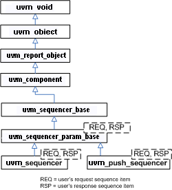
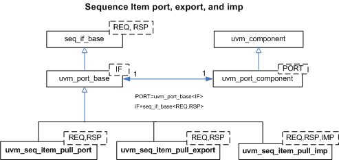

Sequencer Classes
The sequencer serves as an arbiter for controlling transaction flow from multiple stimulus generators. More specifically, the sequencer controls the flow of uvm_sequence_item-based transactions generated by one or more uvm_sequence #(REQ,RSP)-based sequences.

There are two sequencer variants available.
- uvm_sequencer #(REQ,RSP) - Requests for new sequence items are initiated by the driver. Upon such requests, the sequencer selects a sequence from a list of available sequences to produce and deliver the next item to execute. This sequencer is typically connected to a user-extension of uvm_driver #(REQ,RSP).
- uvm_push_sequencer #(REQ,RSP) - Sequence items (from the currently running sequences) are pushed by the sequencer to the driver, which blocks item flow when it is not ready to accept new transactions. This sequencer is typically connected to a user-extension of uvm_push_driver #(REQ,RSP).
Sequencer-driver communication follows a pull or push semantic, depending on which sequencer type is used. However, sequence-sequencer communication is always initiated by the user-defined sequence, i.e. follows a push semantic.
See Sequence Classes for an overview on sequences and sequence items.
Sequence Item Ports
As with all UVM components, the sequencers and drivers described above use TLM Interfaces to communicate transactions.
The uvm_sequencer #(REQ,RSP) and uvm_driver #(REQ,RSP) pair also uses a sequence item pull port to achieve the special execution semantic needed by the sequencer-driver pair.

Sequencers and drivers use a seq_item_port specifically supports sequencer-driver communication. Connections to these ports are made in the same fashion as the TLM ports.
| Sequencer Classes | |
| The sequencer serves as an arbiter for controlling transaction flow from multiple stimulus generators. |